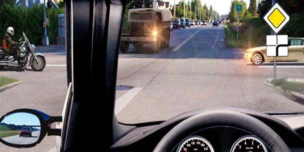
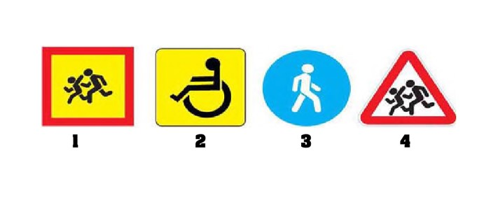
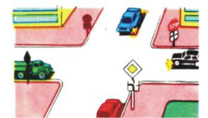
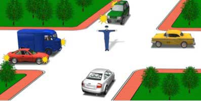
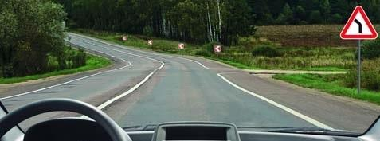
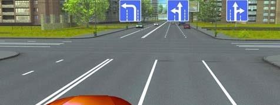
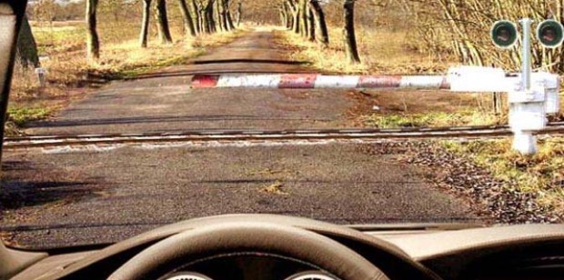
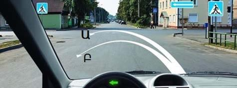
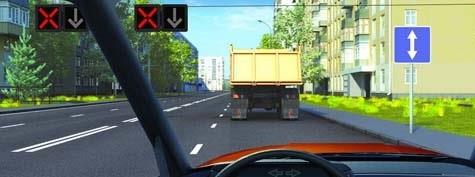
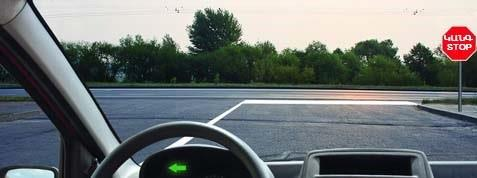

Թեստ 53
30:00
1. Քանի՞ երթևեկության գոտիի կա այս երթևեկելի մասում

2. «Ճանապարհային երթևեկության անվտանգության ապահովման մասին» ՀՀ օրենքի համաձայն` ընդհանուր օգտագործման տրանսպորտային միջոց է համարվում`
3. Ավտոբուսների շահագործումն արգելվում է, եթե՝
4. Տրանսպորտային միջոցների շահագործումն արգելվում է, եթե`
5. Դուք շարունակում եք երթևեկությունն ուղիղ, ո՞ր տրանսպորտային միջոցին պետք է զիջեք ճանապարհը:

6. Նշաններից ո՞րն է տեղադրվում տրանսպորտային միջոցների առջևի և ետևի կողմերում` երեխաների կազմակերպված խմբեր տեղափոխելիս:

7. Տրանսպորտային միջոցները խաչմերուկը կանցնեն հետևյալ հերթականությամբ`

8. Երթևեկությունն արգելվում է`

9. Որպես գնացքի կանգառի ազդանշան ծառայում է`
10. Թույլատրվու՞մ է արդյոք քարշակել կողային կցորդով մոտոցիկլները:
11. Թո՞ւյլատրվում է աջ շրջադարձ դեպի հողային ծածկույթով ճանապարհը

12. Նշված գոտով երթևեկելիս թույլատրվում է երթևեկությունը

13. Այս իրավիճակում
14. Կապույտ գույնի առկայծող փարոսիկով կահավորված տրանսպորտային միջոցի վարորդը երթևեկության մյուս մասնակիցների նկատմամբ առավելություն ունի, եթե`
15. Ինչպե՞ս պետք է գործել տվյալ իրադրությունում:

16. Ո՞ր հետագծով է թույլատրված հետադարձը

17. Վազանցել բեռնատարին թույլատրվա՞ծ է

18. Կարո՞ղ եք շարունակել երթևեկությունը նշանից հետո
